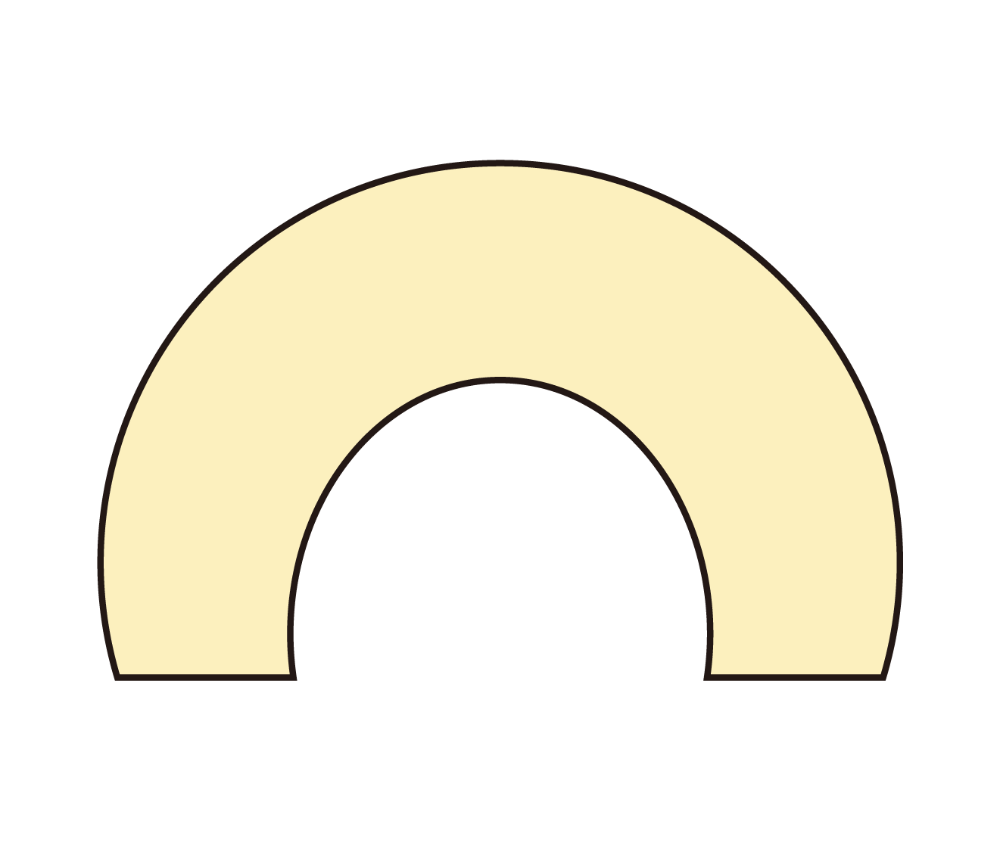

Record of travel
여행의 묘미는 바로 지나고 나서 회상할 때라 생각합니다.
일상을 바쁘게 살아가면서 짧았던 여행의 좋은기억을 되새
기는게 저에게는 살아가게 해주는 원동력 중 하나입니다.
지금부터 제 여행 기억 두가지를 소개할게요.

01 In Osaka :


나니와요도가와 하나비 축제
2019년 20살이 되던 해 여름, 친구와 오사카 여행을 갔습니다.
일본의 축제에 대한 로망이 있기에, 실현하러 하나비를 보러간
날이었어요. 물론 기대했던 만큼 화려한 축제보다는 소소한 쪽
이었지만, 설레임으로 가득한 사람들과 분위기가 좋아서 자주
회상하게 되는 좋은 기억으로 남게 되었어요. 현재에는 더욱 더
겪을 수 없는 시기라서 유독 더 그립습니다.

02 In Taipei :


단수이
코로나가 격상하기 직전, 절묘한 타이밍에 대만을 다녀왔습니다
대만은 어디에나 사람이 많고 다소 복잡함이 느껴졌어요. 하지만
이 곳 '단수이'는 한국의 한강처럼 도심 속의 작은 휴양지 같은
느낌이었고, 시간이 느리게 흘러가는 듯한 여유로운 동네였습니다.
낮에는 사람이 거의 없다가 밤이되면 하나둘 모이게 되는데
그런 뭔가 소박하고 여유로운 분위기가 좋았어요.